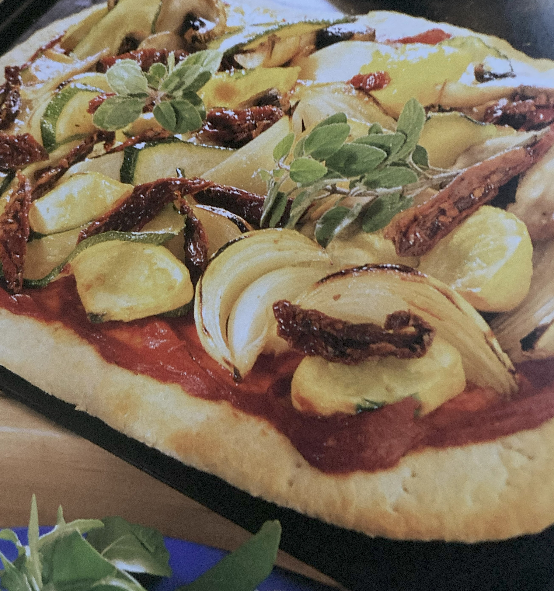

Sun-Dried Vegetable Pizza

Ingredients
Switch to Steps
-
1 Ready-Made Pizza Base ((separate recipe))
-
5 large buttons of Mushrooms
-
1 Onion, cut into thin wedges
-
1 large Zucchini, cut into thin diagonal slices
-
3 Yellow Squash, thinly sliced
-
2 Tbsp Olive Oil
-
4-5 Tbsp Tomato Paste
-
4-6 Sun-Dried Tomatoes, cut into strips
-
Lemon Juice
-
Pepper
Steps
Switch to Ingredients
-
Preheat oven to 450F.
-
Place the pizza base on an oiled baking tray or sheet.
-
Bake for 10 minutes to ensure a crisp base
(do not turn the oven off).
-
Brush the mushrooms. onion, zucchini and squash with olive oil and broil,
turning frequently, until just tender but not brown.
-
Brush the pizza base with extra olive oil, spread with the tomato paste
to within 1" of the rim.
-
Arrange the vegetables on top.
-
Return to the oven and bake for a further 8-10 minutes.
-
Remove from the oven and scatter the tomato strips on top.
-
Squeeze some lemon juice over and season with pepper.